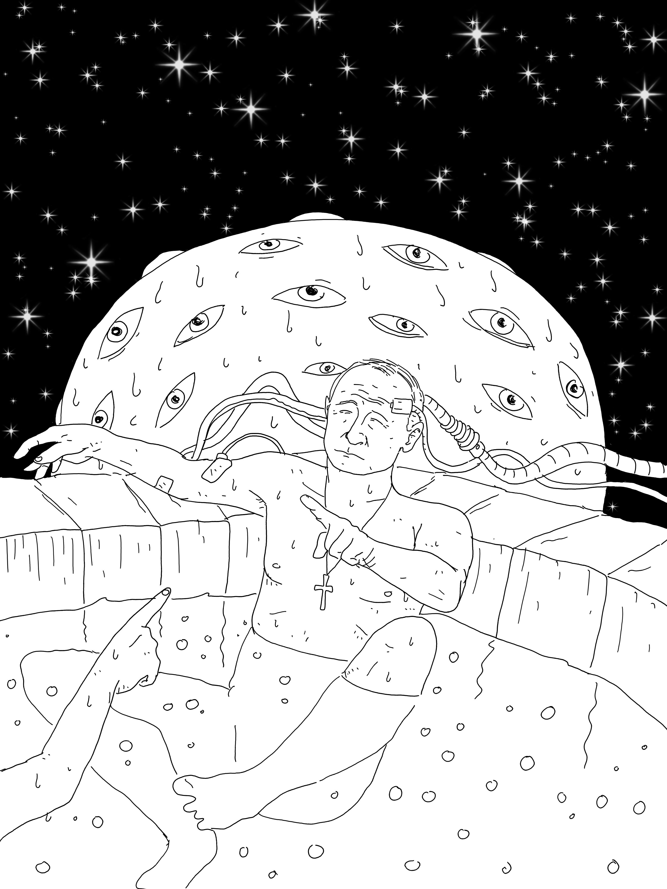
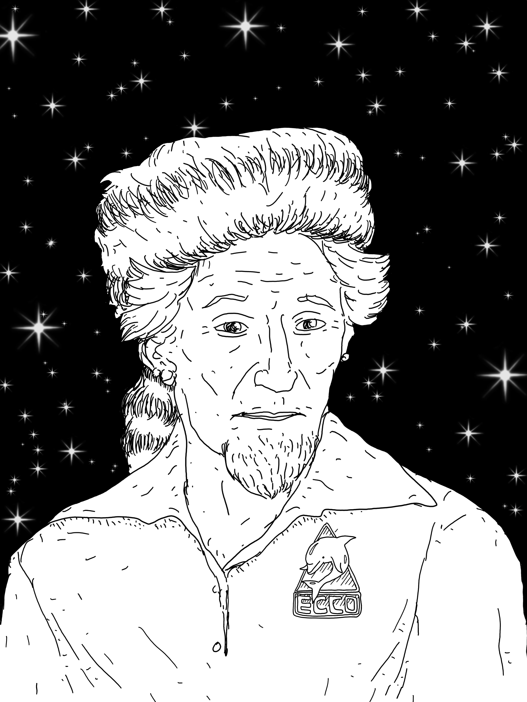

On day 88 of Navalny's time in prison, his people released a new exposé of Putin's riches.
It's an overview of his residence in the Valdai region.
There's a four-story mansion.
A church whose name matches his own (Vladimirskaya).
Guest houses, in Chinese and Russian styles.
A huge spa center with underground levels.
And inside of that center, there is a float tank.
The float tank, or sensory deprivation chamber, was invented by real-life mad scientist John C. Lilly.
It is a sound- and light-proof capsule filled with water, heated to body temperature, so salty that one floats on its surface, unable to drown.
The tank gives its user a break from all sensory input.
You float in a dark, quiet space that's neither hot nor cold.
What happens to most people is, in a half hour or so, the contours of their body disappear.
The practitioner becomes formless awareness.
The dark conscious waters of the ocean of mind.

The tank's inventor, John Lilly, had spent decades exploring his psyche with the help of this device — at first on the natch, and later on LSD and ketamine.
His research led him to this maxim:
In the province of the mind what one believes to be true, either is true or becomes true within certain limits.
These limits are to be found experimentally and experientially.
When so found these limits turn out to be further beliefs to be transcended.
In the province of the mind there are no limits.
L's main contribution to mainstream science was his pioneering research into dolphin intelligence and human-dolphin communication.
It included putting wires into dolphins' brains, giving them LSD, doing LSD alongside them, floating in a tank next to their pool, trying to teach them English.
As part of the NASA-funded language experiment, L's assistant Margaret Howe lived with a dolphin named Peter 24/7, her desk and bed suspended in the air above his pool.
She used to jack Peter off so that he could focus on his vowels and consonants.
It wasn't sexual on my part. Sensuous, perhaps.
Soon after the experiment ended, the lab closed, and the lovers were separated, Peter committed suicide in L's lab in Miami.
In later parts of his life, L claimed to have communicated not only with dolphins, but with alien intelligences.
He dubbed the positive force he had encountered ECCO, for Earth Coincidence Control Office.
ECCO is in charge of the synchronicities that guide us to our fate.
He dubbed the negative force Solid State Intelligence.
It is our coming AI overlords.
L once called the White House (from a hotel, on ketamine) to warn President Ford about SSI.
What do you wish to speak to the President about?
I wish to speak to him about a danger to the human race involving atomic energy and computers.
SSI existed before we invented computers.
We invented computers so that it could come to our planet.
The Cold War is famous for the space and the nuclear races between the US and the Soviet Union.
Today, Putin talks about an AI race.
If somebody secures a monopoly on AI he will become the ruler of the world.
It is rarely mentioned that the USSR and the US were the only two countries who had dolphin programs within their militaries.
After the USSR collapsed, its dolphins, stationed in Sevastopol, were inherited by the Ukraine.
P got them back when he annexed Crimea in 2014.
